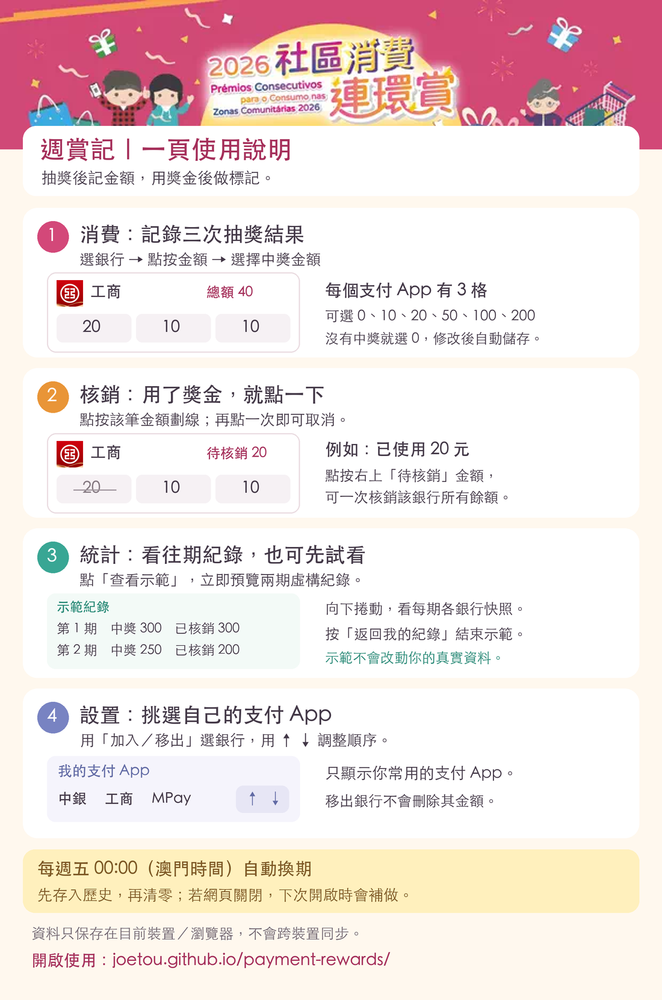

抽獎後記金額，用獎金後做標記。
下圖可開啟原圖放大查看。


文字版使用說明
- 消費：點按銀行的金額，選擇三次抽獎結果。可選 0、10、20、50、100、200 澳門元，修改後自動儲存。
- 核銷：點按已使用的獎金劃線；再點一次取消。點按銀行右上「待核銷」金額，可一次核銷該銀行所有餘額。本工具只作記錄，不會操作支付帳戶。
- 統計：查看往期中獎及核銷總額，向下捲動看各銀行快照。按「查看示範」可預覽虛構資料，按「返回我的紀錄」退出；示範不會改動真實資料。
- 設置：用「加入／移出」選支付 App，用 ↑ ↓ 調整順序。移出不會刪除其金額。
每週五 00:00（澳門時間）先保存歷史，再清零換期。網頁關閉時，下次開啟會補做。資料只保存在目前裝置／瀏覽器，不會跨裝置同步。
私隱提示：獎金及核銷紀錄只留在裝置；網站另收集基本使用統計，不包含銀行名稱及獎金金額。